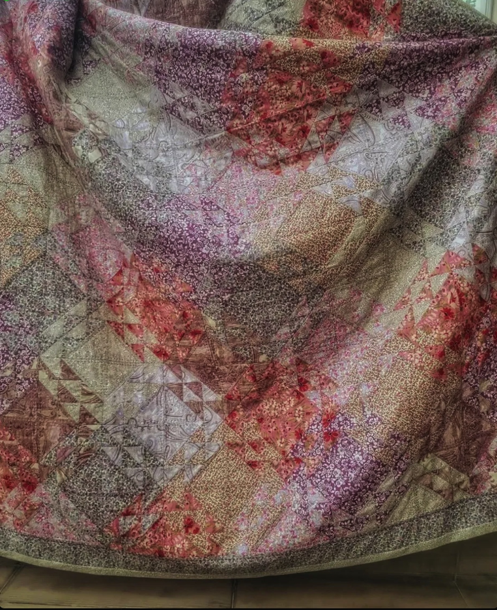
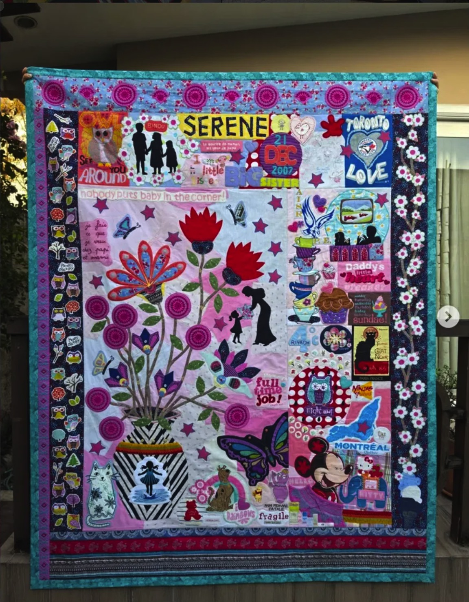
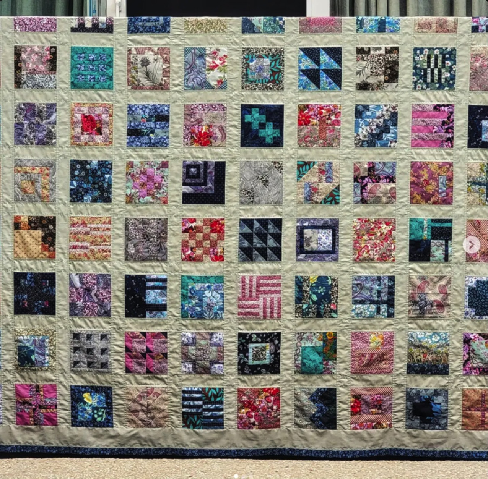
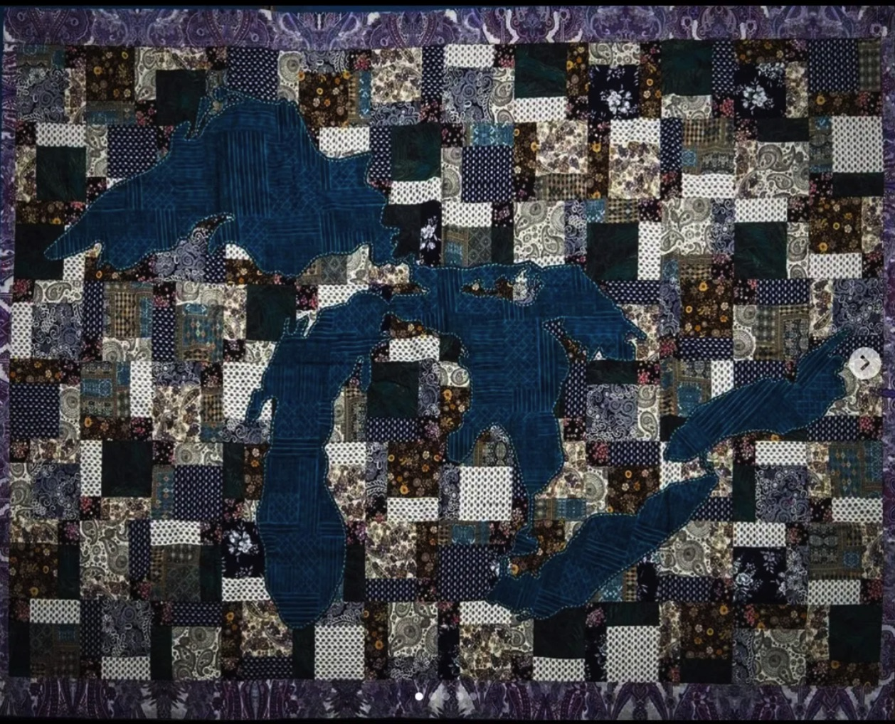
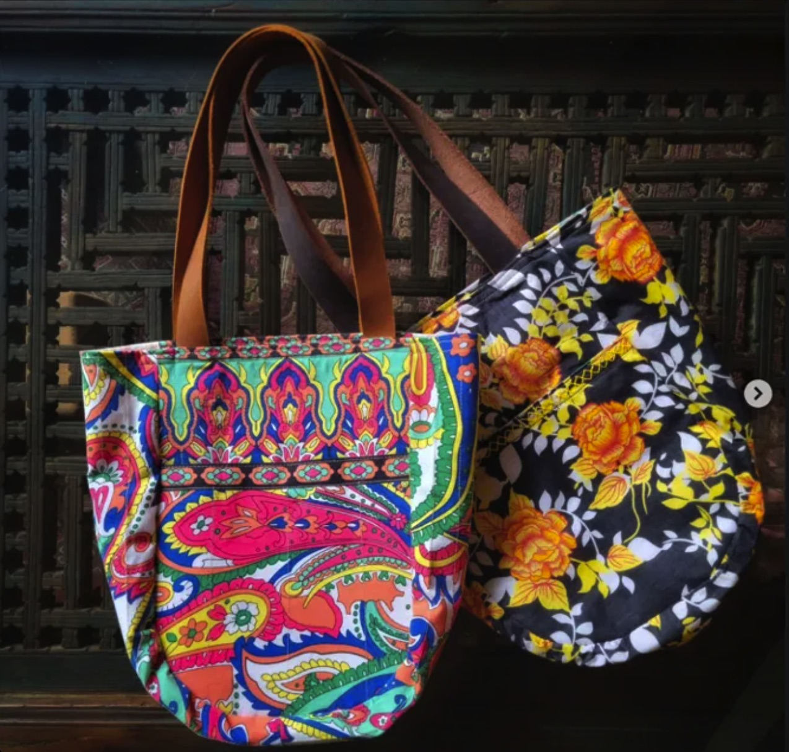
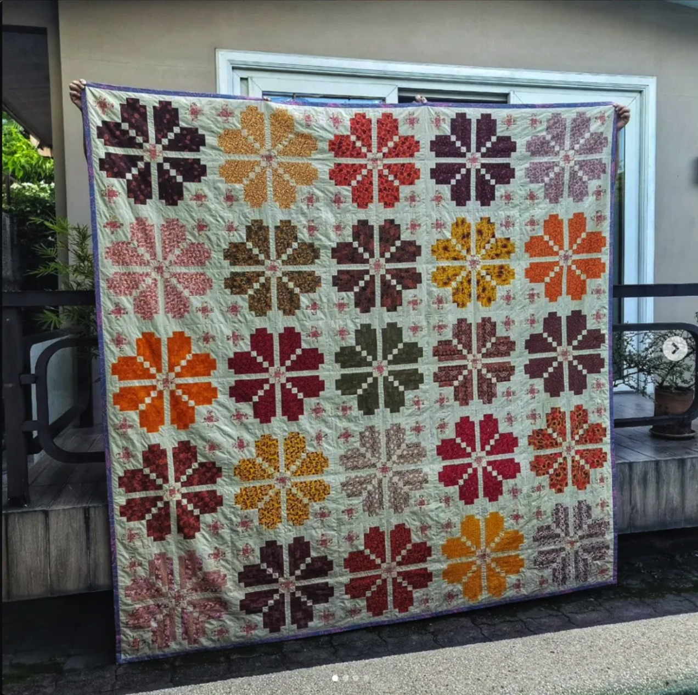
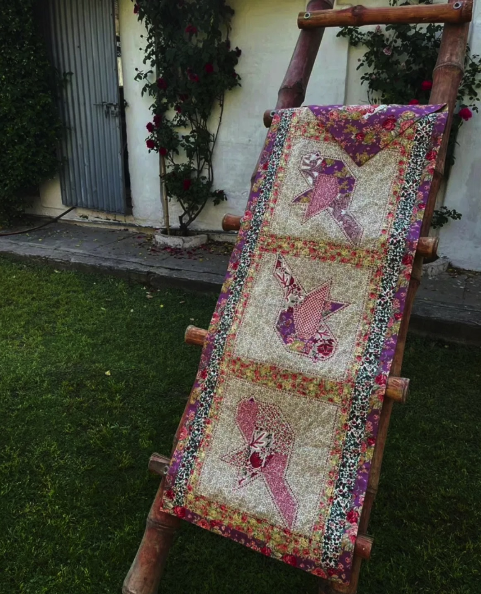
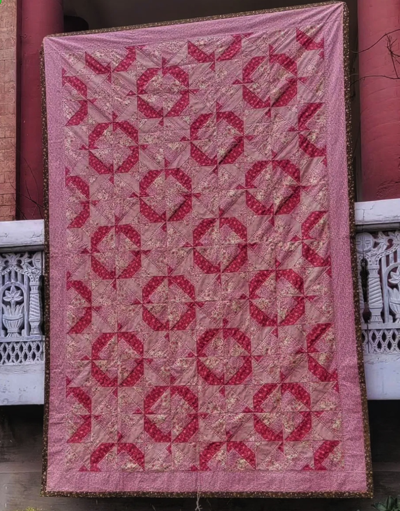

Each piece captures a journey — of memory, love, and the quiet wisdom of generations.
"All my handcrafted works capture my journey — in part and whole —— Suraiya Anvery
of memories and aspirations, guided by nature, relationships,
observations, and the world around me."



A keepsake quilt made mostly from Serene's baby clothes — a tapestry of childhood woven into fabric. Eighteen stars mark her years; the reverse carries her mother's maternity outfits and her father's shirts. A lifetime of love, pieced together.

After completing the quilts from Tasha's precious clothing, the remaining fabric was shaped into bags — made with intentional design and minimal wastage. Each piece, in its entirety, carries within it Tasha's love.

Made for a daughter flying the nest into university life. An autumn field of flowers in warm oranges and earth tones — one bloom for each beloved person in Alaleh's close circle. May the love and prayers of each keep her warm for years to come.

A patchwork runner conjured from the memory of evenings with grandparents — the quiet rhythm of knitting needles, a small leather radio, and the art of carrying a teacup without spilling a drop. Hand quilted in the tradition of Sindhi rallis.

Inspired by the monumental terracotta columns of her grandparents' veranda, and the double-bloom roses that lined the garden steps. A dullai — a lightweight two-layered quilt — stitched as a reminder of simple days and happy times.
Six months and one hundred blocks — each square a remnant from a previous project, each carrying its own memory. A celebration of the no-wastage way of living passed down through generations, made visible in fabric.
Made during the quiet of lockdown, this signature piece renders the transient light of dawn and dusk — the pinkish scatter of the sun below the horizon. A shimmering triangular pattern, hand quilted in the running-stitch of Sindhi rallis.
A meditation on water's boundlessness — inspired by Lake Superior and the sister it embraced. The five Great Lakes emerge in deep teal against a patchwork of paisley and florals. Previously exhibited at the BlackCat Café in Ashland, Wisconsin.
"I learned early that fabric holds stories — old saris become dullais, childhood clothes become keepsakes, and remnants from one project find new life in the next."
Suraiya Anvery is a quilter whose work lives at the intersection of memory and craft. Growing up steeped in the ethos of no-wastage, she was taught that nothing with love woven into it should ever be discarded. That lesson became a practice — and the practice became a life's work.
Her hand-quilting draws on the running-stitch tradition of Sindhi rallis — the hand-embroidered textiles of rural Pakistan — binding layers of 100% organic cotton into works that are at once lightweight, versatile, and deeply felt. Each piece she makes is guided by the people, places, and moments she holds most dear.
Her work has been exhibited in the United States and is held by families across the globe. She is currently accepting a limited number of commissions.
Every commission begins with a conversation — about the people, the memories, and the moments you wish to hold forever.
Suraiya accepts a small number of custom commissions each year. Each piece is made entirely to order — one of a kind, designed around your story, your fabric, your people. Whether it's a keepsake quilt from a loved one's clothing, a gift for a milestone, or simply a piece to warm a home with meaning, every commission is approached with the same patience and devotion as all her work.
Commissions are available in Pakistan and internationally. Pricing is discussed personally based on size, complexity, and materials. To begin, simply reach out below — she would love to hear from you.
Whether you have a question about an existing piece, want to discuss a commission, or simply want to share your love of quilting — Suraiya would love to hear from you.
Follow her work and process on social media: